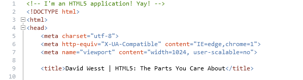

HTML5
The Parts You Care About
An original presentation by David Wesst / @davidwesst
Prarie Dev Con 2013 - Saskatoon, SK
David Wesst
From Winnipeg, Manitoba
Systems Analyst, University of Manitoba (Faculty of Medicine)
Microsoft MVP, Internet Explorer
IE User Agent userAgents.ie
Producer, Brewpub Studios
David Wesst
@davidwesst on Twitter
davidwesst.com on the Web
davidwesst.com/blog on the Blogosphere
dw [at] davidwesst.com on Email
The Point...
To answer one of these questions:
- What is HTML5 for?
- What makes up HTML5?
- What HTML5 tools are out there for me to use?
- Does HTML5 even matter to you?
The Plan
How are we going to understand these points?
- Documents Evolved
- Really Defining HTML5
- HTML5 Hardware (i.e. The Toolbox)
Demo Prerequisites
Go Back
Documents Evolved
What is a document?
Documents Evolved
Documents create a paper reality we call proof.
Mason Cooley
Documents Evolved

Documents Evolved

Documents Evolved

Documents Evolved
- ...a collection of data (images, text, audio, video, etc.)
- ...a collection of data sources (references, hyperlinking)
- ...a product of collaboration
What we did not imagine was a Web of people, but a Web of documents.
Dale Dougherty
What does HTML have to do with a document?
- HTML has always been for creating and sharing documents.
- ...our interpretation of what a document is has evolved.
Really Defining HTML5
Really Defining HTML5
-
The Goal:
-
To update the standards for the web to represent how the world uses the web today.
Really Defining HTML5
How do you do this with plain old markup?
You Don't. (We haven't done that in years)
HTML5 defines features using three (3) core technologies:
- HTML | for Defining Documents
- CSS | for Styling Documents
- JavaScript | for Making Documents Interactive
Really Defining HTML5
HTML5 features are divided into eight (8) separate groups:
- Semantics
- Offline & Storage
- Device Access
- Connectivity
- Multimedia
- 3D, Graphics & Effects
- Performance & Integration
- CSS3
HTML5 Tools & Building Materials
HTML5 Tools & Building Materials
Definition | Style | Interaction
- HTML Markup | Definition
- CSS3 | Style
- JavaScript | Interaction
HTML5 Tools & Building Materials
Definition | HTML
DEMO
HTML5 Tools & Building Materials
Definition | HTML
Your IDE or Editor Experience
Microsoft WebMatrix
- Free
- Provides HTML, JavaScript, and CSS3 Auto-Complete
- Focuses on Microsoft & Open Source technologies for web
- Community Extensions to add more HTML5 development support
HTML5 Tools & Building Materials
Definition | HTML
Your IDE or Editor Experience
Eclipse w/ Nodeclispe, Web Platform Tools, Aptana
- Free and Open Source
- Provides strong JavaScript Support
- Aptana most Web Focused
- Combine Favourite Plugins to build your ideal environment
HTML5 Tools & Building Materials
Definition | HTML
Your IDE or Editor Experience
Cloud 9 (http://c9.io)
- Hosted IDE
- Free & Open Source
- HTML5, Ruby, PHP, and Node
- Provides Terminal, MySQL, and link to Github & Bitbucket
HTML5 Tools & Building Materials
Definition | HTML
Visual Studio 2012/2013
- Free-ish (Free Editions Available)
- Microsoft Development Focused
- Provides HTML, JavaScript, and CSS3 Auto-Complete
- Number of Create Extensions to support HTML5
- Overhauled Web Development Editor Experience
HTML5 Tools & Building Materials
Definition | HTML
A few others...
- Webstorm IDE
- Notepad++
- Sublime Text, Vi, Emacs
HTML5 Tools & Building Materials
Definition | HTML
What HTML5 Editor do you use?
HTML5 Tools & Building Materials
Definition | HTML
Demo
HTML5 Tools & Building Materials
Definition | HTML
Tons of new elements! (for Structure and Semantics)
<article>
<aside>
<bdi>
<command>
<details>
<figure>
<figcaption>
<footer>
<header>
<hgroup>
<mark>
<meter>
<nav>
<progress>
<ruby>
<rt>
<rp>
<section>
<summary>
<time>
<wbr>
HTML5 Tools & Building Materials
Definition | HTML
Tons of new elements! (Media)
<audio>
<video>
<source>
<embed>
<track>
HTML5 Tools & Building Materials
Definition | HTML
Tons of new elements! (for Drawing)
<canvas>
HTML5 Tools & Building Materials
Definition | HTML
Tons of new elements! (for Form)
<datalist>
<keygen>
<output>
HTML5 Tools & Building Materials
Definition | HTML
Removed old timey elements!
<acronym>
<applet>
<basefont>
<big>
<center>
<dir>
<font>
<frame>
<frameset>
<noframes>
<strike>
<tt>
HTML5 Tools & Building Materials
Definition | HTML
All you need is the new DOCTYPE
HTML5 Tools & Building Materials
Definition | HTML
Demo: Audio Element
HTML5 Tools & Building Materials
Definition | HTML - DEMO
Audio Element (Part 1) - Default Audio Player
HTML5 Tools & Building Materials
Definition | HTML - DEMO
Audio Element (Part 2) - Multiple Source Files
HTML5 Tools & Building Materials
Definition | HTML
What about backwards compatibility? (i.e. Internet Explorer)
Coming up later in the presentation, I promise!
HTML5 Tools & Building Materials
Style | CSS3 - Compilers
SASS - Syntactically Awesome Stylesheets
- http://sass-lang.com/
-
Improves CSS/ syntax with extra language features
- Variables
- Nested Rules
- Mixins (Rules with Parameters)
- Selector Inheritance
- Available as Ruby Gem
HTML5 Tools & Building Materials
Style | CSS3 - Compilers
LESS - Dynamic Stylesheet Language
- http://lesscss.org/
-
Similar to SASS. Improves CSS syntax with extra language features
- Variables
- Nested Rules
- Mixins (Rules with parameters)
- Functions and Operations
- JavaScript Based
- Client and Server Options
HTML5 Tools & Building Materials
Style | CSS3 - Compilers
DEMO - Less
This is my header!
HTML5 Tools & Building Materials
Style | CSS3 - Frameworks
HTML5 Tools & Building Materials
Style | CSS3
- Media Queries
- Border-Radius
- Background Gradients
- CSS Animations and Transitions
HTML5 Tools & Building Materials
Interaction | JavaScript - Libraries
Modernizr
- http://modernizr.com/
-
Makes your HTML5 Fully Browser Compatible
- Open Source with MIT License
- Handles IE support just by adding the library
- Check whether client support specific HTML5 features
- Can check in both CSS and JavaScript
- Adds extra tooling for performance
HTML5 Tools & Building Materials
Interaction | JavaScript - Libraries
DEMO - Modernizr
Go to the DemoHTML5 Tools & Building Materials
Interaction | JavaScript - Libraries
- There are a TON of libraries avilable thanks to the open source community.
-
Before you start writing your own, find out if someone else has done it before
HTML5 Tools & Building Materials
Interaction | JavaScript - Compilers
CoffeeScript
- http://coffeescript.org/
-
"...a little language that compiles into JavaScript"
- Cleaner more Readable Code
- Ruby-like Syntax
- Uses JavaScript Lint
- Produces readable JavaScript Code
- Installs from NPM
HTML5 Tools & Building Materials
Interaction | JavaScript - Compilers
Typescript
- http://typescript.org/
-
Microsoft's attempts at ECMASCRIPT next
- ActiveOpen Source Project
- Is subset of JavaScript (i.e. JavaScript is valid TypeScript)
- Compiles down to JavaScript
HTML5 Tools & Building Materials
Interaction | JavaScript - Testing
Jasmine
- https://github.com/pivotal/jasmine/wiki
- Behaviour Driven Development (BDD)
- Resembles RSpec
- Works with multiple platforms (ASP.NET, NodeJS, Ruby, etc.)
- No external dependencies
HTML5 Tools & Building Materials
Interaction | JavaScript - Testing
QUnit
- http://qunitjs.com/
- Unit Testing Framework
- Developed by jQuery
- No external dependencies (not even jQuery)
HTML5 Tools & Building Materials
Interaction | JavaScript - Testing
Mocha
- http://visionmedia.github.io/mocha/
- BDD based framework
- Resembles RSpec
- Works with both client and server (NodeJS)
HTML5 Tools & Building Materials
Interaction | JavaScript - Testing
DEMO - BDD with Jasmine
HTML5 Tools & Building Materials
Interaction | JavaScript
JavaScript APIs
- Media (i.e Audio and Video)
- Text Track (i.e. Subtitles)
- Web Crypto
- Encrypted Media Extensions (EME)
- Offline Web Applications / Application Cache
- User Interaction
- History
HTML5 Tools & Building Materials
Interaction | JavaScript
JavaScript APIs
DEMO - Media API
HTML5 Tools & Building Materials
Interaction | JavaScript
HTML5 Tools & Building Materials
Interaction | JavaScript
Non-HTML5 Spec JavaScript APIs
- Canvas (2D Context)
- Cross Channel Messaging
- Microdata
- Web Workers
- Web Storage / IndexedDB
- Server-Sent Events
HTML5 Tools & Building Materials
Interaction | JavaScript
Non-HTML5 Spec JavaScript APIs
DEMO - Canvas API
A Quick Recap
The Point...
To answer one of these questions:
- What is HTML5 for?
- What makes up HTML5?
- What HTML5 tools are out there for me to use?
- Does HTML5 even matter to you?
The Plan
How are we going to understand these points?
- Documents Evolved
- Really Defining HTML5
- HTML5 Hardware (i.e. The Toolbox)
Next Steps
Next Steps
- Go to Modern.IE and explore
- Read an HTML5 book or Tutorial
- Download and run an HTML5 editor (e.g. WebMatrix)
- Upgrade an app with Modernizr and the new DOCTYPE